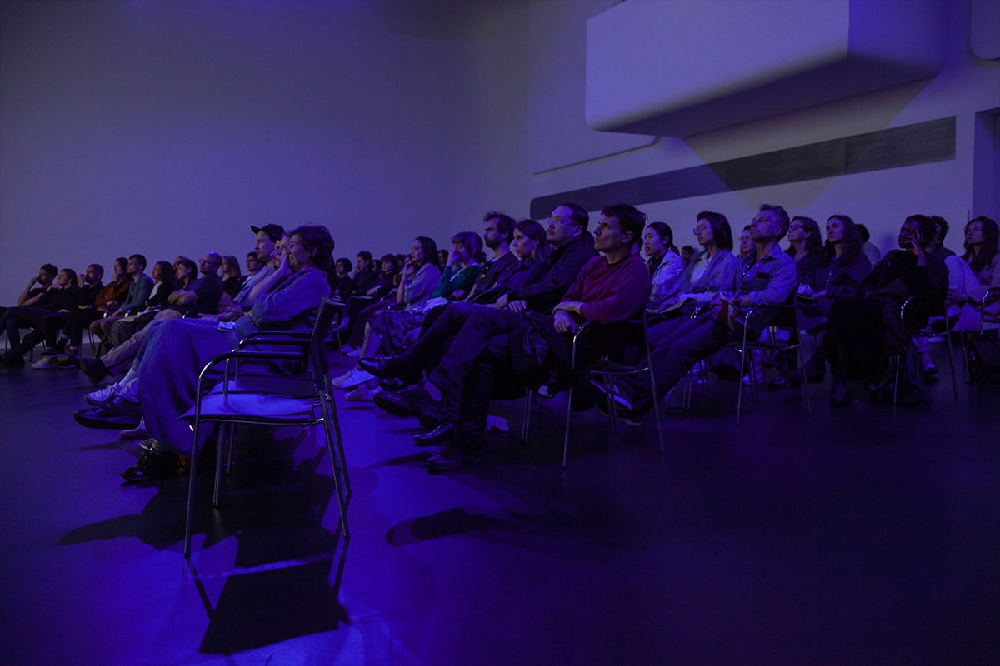

Synthetic Types
Date
May 26, 2019
Venue
Stedelijk Museum Amsterdam
Event website
stedelijk.nl
Synthetic Types was realised in the framework of Landscape with Bear, an exhibition with the Collection (Unintended) of De Appel.
In this filmed performance, two actors interacted with the Unintended Collection, speaking directly to the camera in Russian, Japanese and Korean in response to questions of an interlocutor who could not be seen or heard. The performance was carried out in the exhibition space at De Appel and live-streamed to the auditorium of the Stedelijk Museum, where it was transcribed live by three translators. The work explored how identity and access are created or restricted through institutional protocols and ideas of foreignness.
Artist
Shen Xin
Press
"The productivity of eccentricity"
Metropolis M, 06.05.2019
Photos
Konstantin Guz

